왜 유럽은 목숨을 걸고 바다로 나갔을까?
신항로 개척의 배경 — 향신료·비단·도자기 같은 동방 상품의 인기 → 이탈리아 상인과 이슬람 상인의 독점으로 값이 비쌈 → 동방과 직접 교류할 새 항로를 찾음 · 천문학·지리학 발달, 나침반 같은 항해 도구와 배 만드는 기술(캐러벨선)이 뒷받침.
동쪽 항로와 서쪽 항로 — 포르투갈(동쪽): 디아스 희망봉 도착(1488) → 다가마 인도 캘리컷 도착(1498) / 에스파냐(서쪽): 콜럼버스 서인도 제도 도착(1492) → 마젤란 함대 최초의 세계 일주(1519~1522).
삼각 무역과 은 — 무역 중심지가 지중해에서 대서양으로 · 유럽(총·옷감) → 아프리카(노예) → 아메리카(은·작물) → 유럽 · 동인도 회사를 세워 아시아와 교역 · 아메리카의 은으로 아시아 상품값을 치름 → 금과 은이 많이 들어와 물가 상승.
같은 사건, 다른 얼굴 — 아메리카: 아스테카·잉카 문명 파괴, 대농장·광산의 가혹한 노동, 천연두·홍역으로 인구 급감 / 아프리카: 노예 무역 → 인구 감소·성비 불균형·부족 간 갈등 / 오늘까지 남은 것: 브라질 카니발, 단일 작물 재배.
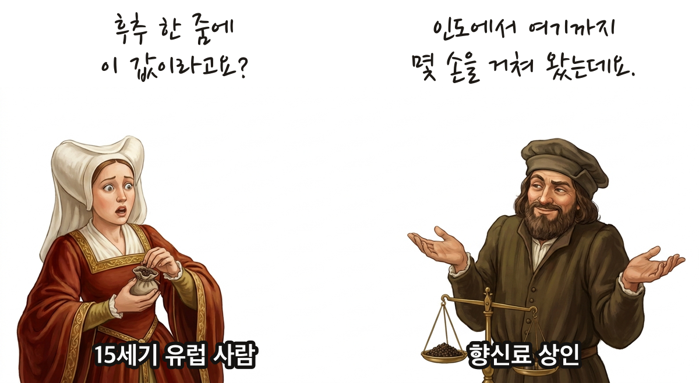
- 신항로 개척의 배경과 과정을 이해할 수 있다.
- 신항로 개척으로 확립된 세계 교역망이 세계 여러 지역에 미친 영향을 파악할 수 있다.
💡 오늘의 열쇳말은 '중간에서 다 차지한 사람들' — 이것 때문에 사람들이 바다로 나갔다.
🎙️ 서양사 지난 두 시간 기억나? 3-3-4에서는 흑사병 뒤 장원이 무너지고 왕이 힘을 모았지. 3-3-5에서는 이탈리아에서 르네상스가 피어났어. 신항로 개척은 그 둘이 다 끝난 뒤의 일이 아니야. 아래 띠의 노란 칸 안에서 세 줄이 각각 무엇을 하고 있는지 봐.
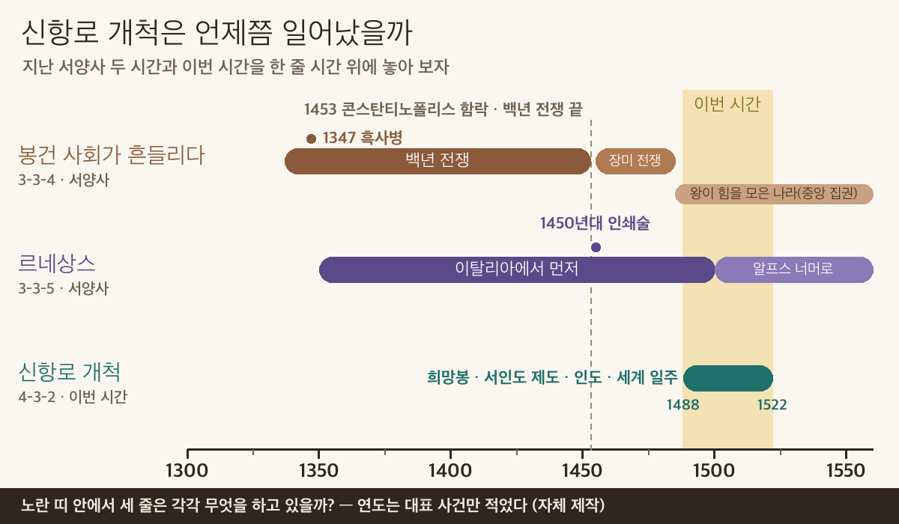
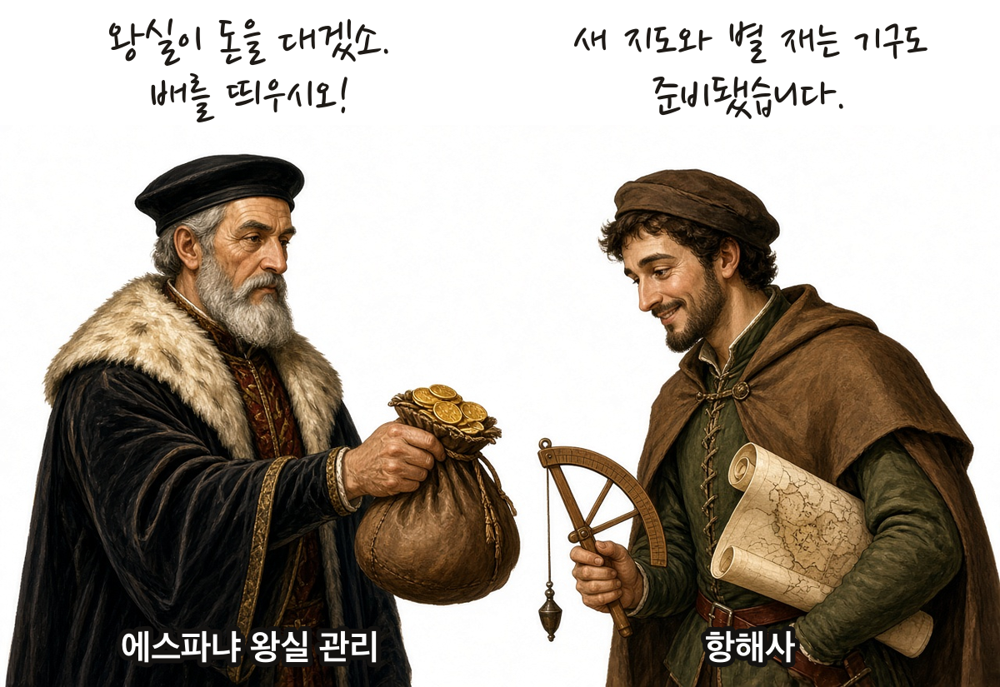
배를 여러 척 띄울 큰돈은 영주가 아니라 힘을 모은 왕실이 댔어. 교과서 130쪽에 나오는 '에스파냐 여왕의 후원'이 바로 그 돈이야. 길을 찾을 지식은 르네상스와 함께 자란 천문학·지리학, 그리고 인쇄술로 퍼진 새 지도에서 왔지.
📕 교과서 130쪽 첫 문단 + 날개 펴고 채우기 · 배정 시간 5분
13세기 이후 유럽인들은 마르코 폴로의 『동방견문록』 같은 여행기를 읽으며 동방에 호기심을 가졌다. 십자군 전쟁 이후 무역이 활발해지면서 향신료·비단·도자기 같은 동방 상품이 큰 인기를 끌었다. 그러나 동방의 상품은 이탈리아 상인과 이슬람 상인이 ①하여 값이 비쌌다. 그래서 유럽인들은 동방과 직접 교류할 새 항로를 찾아 나섰다.
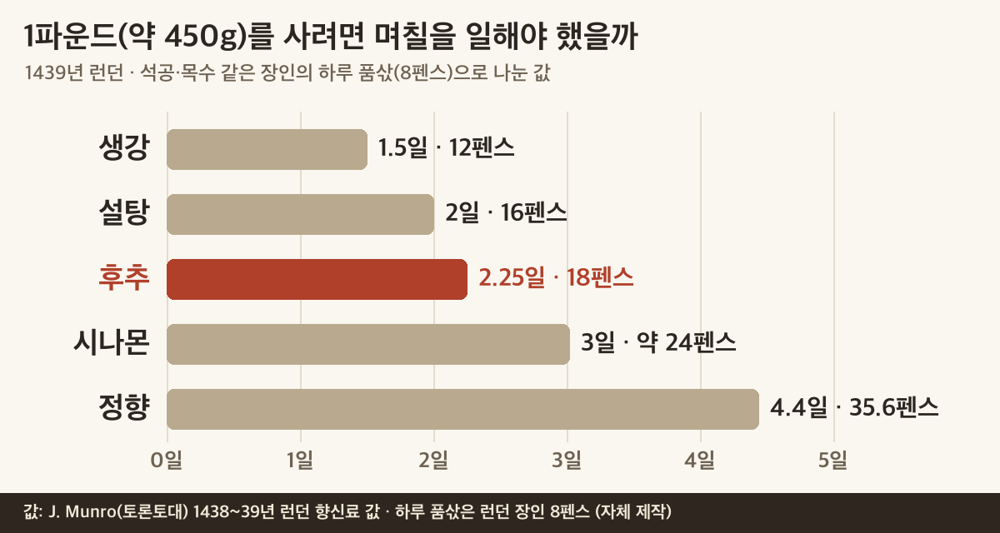
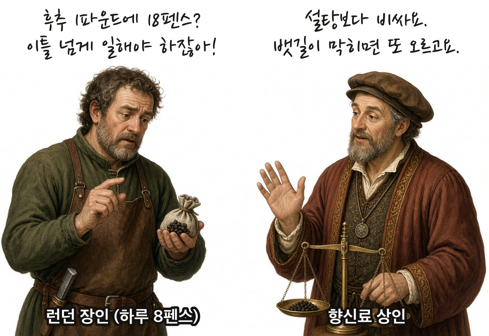
1439년 런던에서 후추 1파운드(약 450g)는 18펜스, 집 짓는 장인의 하루 품삯은 8펜스였어.
값은 늘 같지도 않았어. 베네치아의 후추 도매값은 1430년대부터 그 전의 절반쯤으로 내려왔어. 그러다 1499년 베네치아가 오스만 제국과 전쟁을 벌여 뱃길이 막히자 다시 올랐어. 길 하나가 막히면 값이 바로 흔들린 거야.
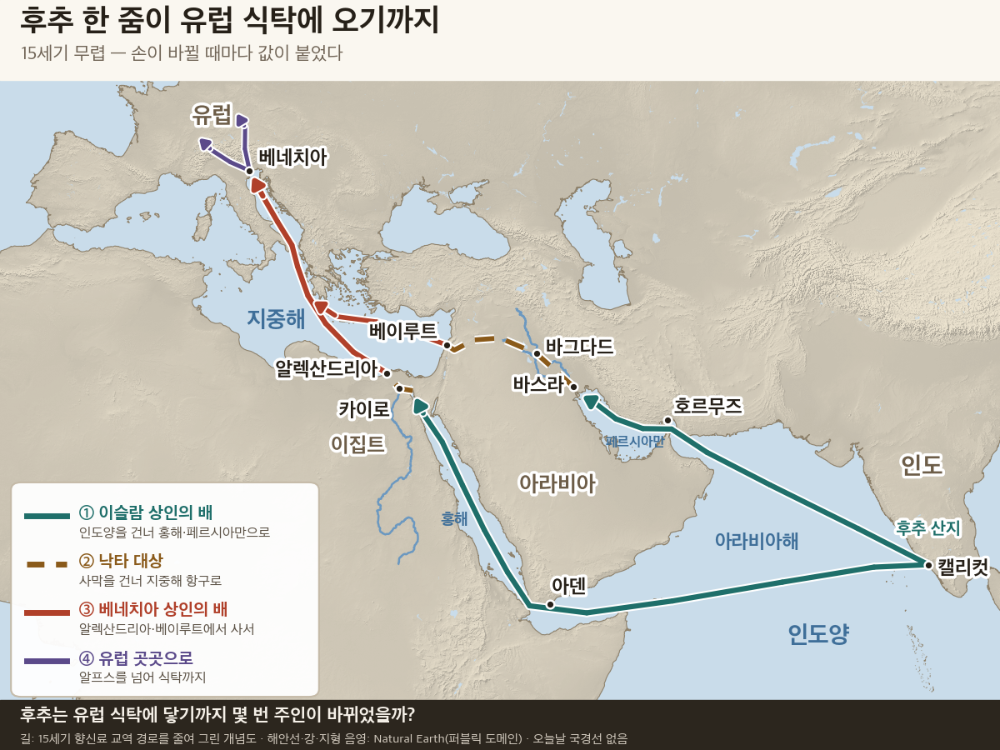
지도에서 ①부터 ④까지 길을 따라가 봐.
인도에서 딴 후추는 먼저 이슬람 상인(아랍·페르시아 상인)의 배에 실려 인도양을 건너 홍해나 페르시아만으로 들어왔어. 거기서 낙타 등에 실려 이집트의 알렉산드리아나 지중해 동쪽 해안의 베이루트까지 갔지. 그 항구에서 이탈리아 베네치아 상인이 사서 지중해를 건너 유럽 곳곳에 팔았어.
인도 → 이슬람 상인 → 낙타 대상 → 알렉산드리아·베이루트 → 베네치아 상인 → 유럽 식탁. 손이 하나 바뀔 때마다 값이 붙었어. 다른 길이 없으니 이 상인들이 값을 마음대로 정할 수 있었어. 15세기 말 베네치아는 해마다 큰 배들을 무리 지어 알렉산드리아와 베이루트로 보내 향신료를 사 왔어. 이 길은 끊긴 게 아니라 잘 돌아가고 있었어. 그래서 중간을 건너뛰고 싶은 사람들이 생긴 거야.
📕 교과서 131쪽 첫 문단 + 사진 설명 펴고 채우기 · 배정 시간 4분
이 무렵 천문학과 지리학이 발전하여 이전보다 정확한 항해 지도가 만들어졌고, ② 등의 항해 도구와 선박 제조 기술도 발달하였다. 먼 거리를 항해할 수 있게 되자 신항로 개척은 더욱 활기를 띠었다.
🧭 직접 써 보자 — 항해 도구 실험실 (새 창) · 별 없는 밤바다를 건너 보고, 북극성을 겨눠 우리 배가 어디쯤인지 재 보고, 캐러벨선이 맞바람에도 나아가는 까닭을 옛 짐배와 견줘 봐. 돌리고 눌러 보는 데 5분이면 돼. ※ 교과서는 «육분의»라고 쓰지만, 그 시대 뱃사람이 실제로 쓴 것은 사분의였어 — 실험실 안 «역사 메모»에 적어 두었어.
📕 교과서 130쪽 지도 + 131쪽 본문 펴고 채우기 · 배정 시간 5분
대서양 연안의 포르투갈과 에스파냐가 앞장섰다. 포르투갈은 아시아로 가는 동쪽 항로를, 에스파냐는 대서양으로 돌아가는 서쪽 항로를 열었다.
| 인물 | 나라 | 한 일 |
| 바르톨로메우 디아스 | 포르투갈 | 아프리카 남쪽 끝 희망봉에 도착(1488) |
| 바스쿠 다가마 | 포르투갈 | 희망봉을 돌아 인도 캘리컷에 도착(1498) |
| ③ | 에스파냐 | 대서양을 건너 서인도 제도에 도착(1492) |
| 마젤란 함대 | 에스파냐 | 태평양을 가로질러 최초로 세계 일주(1519~1522) |
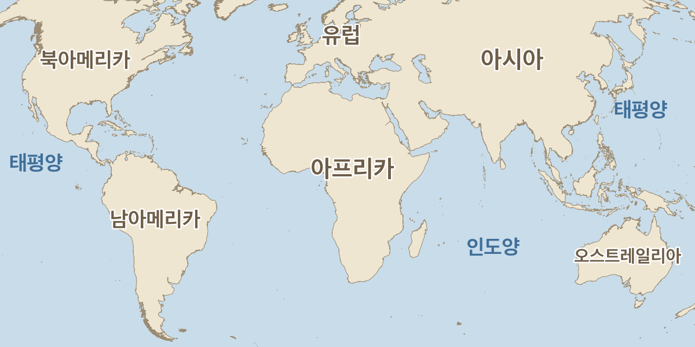
리스본희망봉 1488리스본희망봉말린디캘리컷 1498팔로스카나리아 제도서인도 제도 1492마젤란 해협필리핀 1521희망봉세비야 · 돌아옴 1522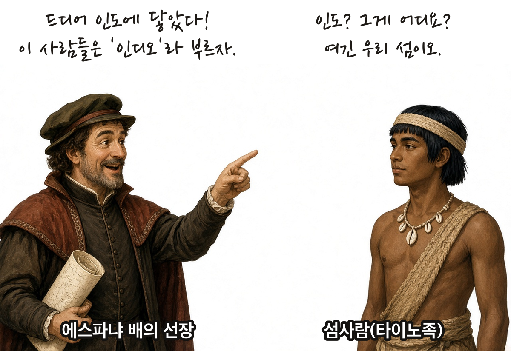
이름에 흔적이 남았어. ③은 자기가 아시아(인도) 근처에 왔다고 믿었어. 그래서 그곳이 지금도 '서인도' 제도이고, 그곳 사람들은 '인디오'라고 불렸어.
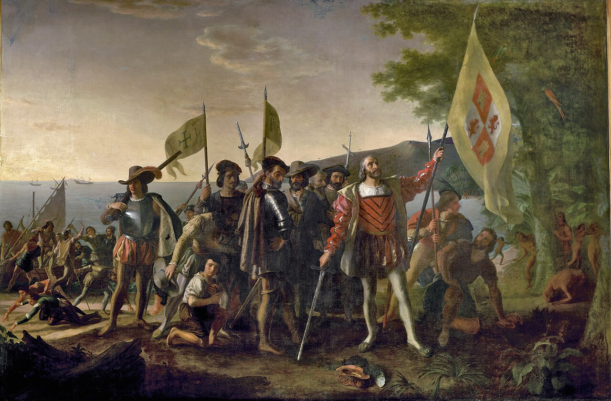
🎙️ 잠깐, 이 그림은 그날 그 자리에 있던 사람이 그린 게 아니야. 한참 뒤에 자랑스러운 장면처럼 그린 거야. 앞 삽화의 그 섬사람이 붓을 들었다면 어떤 장면이 됐을까? 5단계에서 다시 생각해 보자.
"그들은 그에게 집에서 이렇게 멀리 와서 무엇을 찾느냐고 물었고, 그는 우리가 크리스트교도와 향신료를 찾으러 왔다고 말하였다."
🎙️ 다가마 일행이 인도에 닿은 다음 날 적은 기록이야. 1단계에서 본 까닭은 향신료, 곧 돈이었지? 여기엔 하나가 더 붙어 있어. 크리스트교도를 찾는 것, 곧 믿음이야.
'무엇하러 왔소?' — 위 사료의 장면이야. 바스쿠 다가마의 배가 인도 캘리컷에 닿자, 먼저 내린 선원은 북아프리카 튀니스에서 온 두 사람을 만났어. 에스파냐 말과 이탈리아 말을 할 줄 아는 상인들이었지. 인도양은 이미 여러 나라 상인이 오가는 큰 무역 바다였던 거야. 다가마가 왕에게 바치려던 선물은 왕의 신하들에게 '왕께 드릴 물건이 아니다'라는 비웃음을 샀어. 그래도 네 척에 170명쯤이던 일행 가운데 두 척, 55명쯤이 살아 돌아왔고, 싣고 온 후추로 큰돈을 벌었지.
270명이 떠나 18명이 돌아오다 — 마젤란 함대는 1519년 배 다섯 척, 270명쯤으로 떠났어. 태평양을 건너며 굶주렸고 마젤란은 필리핀에서 싸우다 죽었지. 3년 뒤 돌아온 건 가장 작은 빅토리아호 한 척, 18명이었어. '최초의 세계 일주'의 값이야.
📕 교과서 132쪽 펴고 채우기 · 배정 시간 7분
신항로가 개척된 이후 무역의 중심지는 지중해에서 ④으로 옮겨 갔다. 새 중심지의 무역은 유럽·아메리카·아프리카를 잇는 삼각 무역으로 발전하였다. 유럽 사람들은 아프리카에 총과 옷감 등을 주고 노예를 공급받았다. 이들은 아메리카에 대농장을 짓고 아프리카 노예를 동원하여 작물을 생산한 뒤, 그 작물을 유럽에 되팔아 큰 이익을 남겼다.
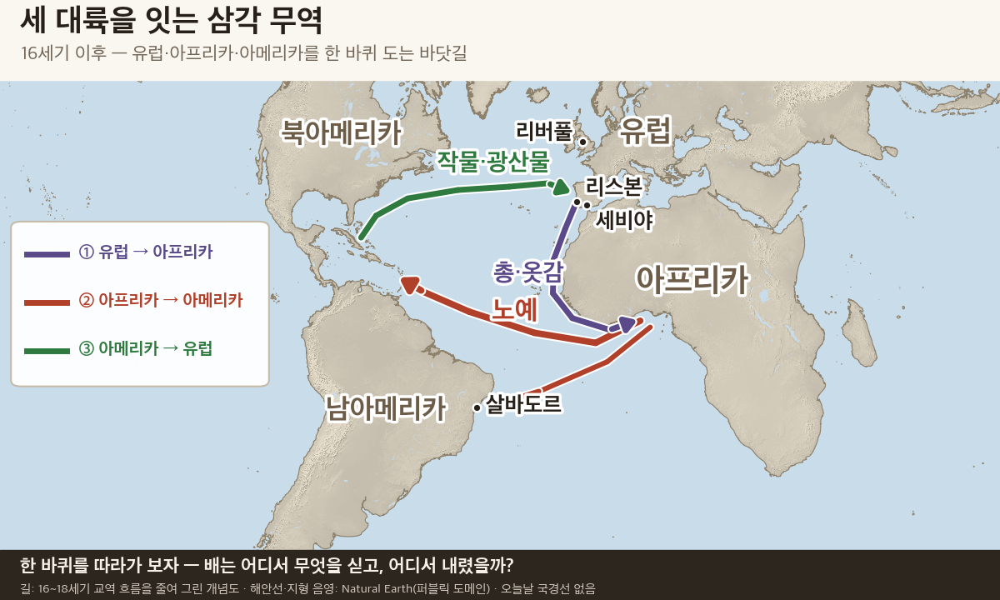
한편 유럽은 새 항로를 따라 아시아와도 교역하였다. 네덜란드·영국·프랑스 등은 각각 동인도 회사를 세우고 아시아로 진출하였다. 유럽은 아시아의 향신료·면직물·도자기·비단·차를 사들이고, 아메리카에서 얻어 낸 ⑤으로 값을 치렀다. 많은 양의 귀금속이 유럽에 들어오면서 물가가 크게 올랐다.
🎙️ ⑤의 길을 따라가 봐. 아메리카 광산에서 캔 ⑤이 유럽으로 가고, 유럽은 그걸로 아시아의 차와 비단을 샀어. 금속 한 덩이가 세 대륙을 한 줄로 꿴 셈이야.
아메리카 작물은 유럽으로만 간 게 아니야. 아메리카의 고추는 포르투갈 상인을 따라 인도 서쪽 해안의 고아로 건너갔어. 포르투갈 뱃사람이 먹던 '포도주와 마늘에 절인 고기'가 인도 향신료·고추와 만나 매운 커리 '빈달루'가 됐지.
고추는 일본을 거쳐 조선에도 들어왔어. 1614년 이수광은 『지봉유설』에 '남만초'가 일본에서 처음 왔다고 적었어. 아메리카 작물이 아시아 밥상까지 바꾼 거야.
📕 교과서 133쪽 펴고 읽기 · 배정 시간 7분
🎙️ 여기서 반전이야. 유럽에겐 '발견의 시대'였지만, 다른 쪽에선 전혀 다른 일이 벌어지고 있었어.
아메리카 — 오래전부터 멕시코고원에는 아스테카 문명, 안데스고원에는 잉카 문명이 발달하였다. 그러나 이 문명들은 유럽인들이 아메리카에 진출하면서 빠르게 파괴되었다. 에스파냐인들은 원주민을 동원해 대농장에서 사탕수수·담배 같은 상품 작물을 재배하고, 광산에서 금과 은을 캤다. 원주민은 가혹한 노동에 시달렸고, 유럽에서 들어온 천연두·홍역 같은 새 질병으로 많은 사람이 목숨을 잃었다.
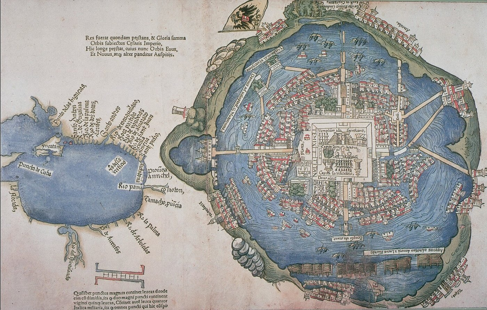
🔍 지도에서 하나만 찾아보자 — 이 도시는 어디 위에 세워져 있지? 육지와는 무엇으로 이어져 있을까?
🎙️ 이 지도는 코르테스의 편지와 함께 유럽에서 찍혔어. 유럽 사람들이 처음 본 아스테카의 수도야. 그런데 지도가 나왔을 때 이 도시는 이미 전쟁으로 무너진 뒤였어. 그렇게 빨리 무너진 까닭 하나는 병이야. 코르테스 일행이 지나간 뒤 천연두가 번져, 몬테수마 다음 왕 쿠이틀라우악은 왕이 된 지 80일쯤 만에 그 병으로 죽었고 병사도 백성도 앓아누워 수도를 지킬 힘이 없었어.
✍️ 이 지도는 정복한 쪽이 유럽 사람들에게 보여 주려고 찍은 거야. 지도에서 믿을 만한 것 하나와 조심해서 봐야 할 것 하나를 찾아 적자. (힌트: 건물 모양과 맨 위 깃발을 봐.)
아프리카 — 원주민 인구가 줄어 노동력이 부족해지자 유럽인은 아프리카 원주민을 노예로 동원하였다(노예 무역). 독자적인 문화를 누리던 아프리카는 인구가 줄고 성비가 불균형해졌으며, 부족 간의 갈등도 깊어졌다.
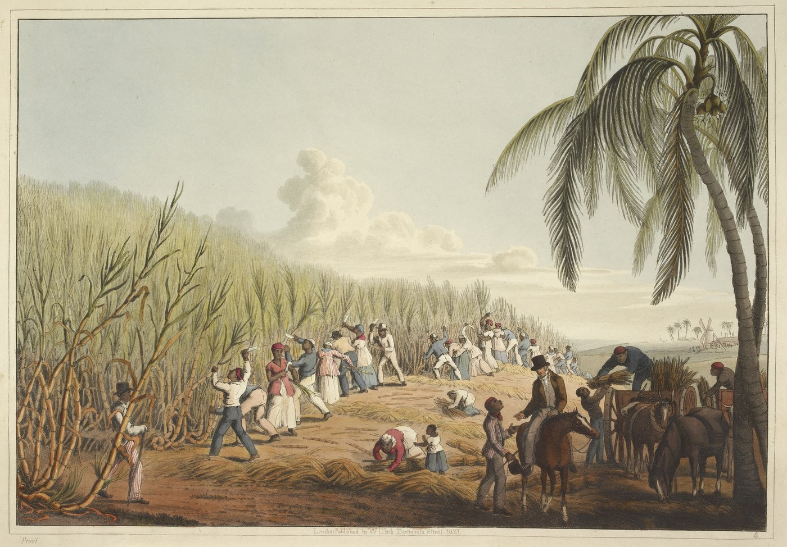
🎙️ 교과서 132쪽 사탕수수 설명 기억나? '벌 없이 꿀을 주는 갈대'. 그 달콤함 뒤에 이 장면이 있었어. 설탕이 인기를 끌수록 아프리카에서 더 많은 사람이 끌려왔지.
같은 신항로 개척을 두고, 아래 두 입장에서 각각 신문 제목을 지어 보자. (10자 내외)
| 입장 | 내가 지은 제목 |
| 유럽 상인 | |
| 아메리카 원주민 |
📕 교과서 134쪽 「우리 해 보자」의 자료 1(브라질 카니발)·자료 2(단일 작물 재배)를 읽고 표를 채우자.
| 자료 | 무엇이 오늘까지 남았나 | 긍정·부정 |
| 자료 1 브라질 카니발 | ||
| 자료 2 단일 작물 재배 |
✍️ 먼저 짝과 표를 바꿔 읽고, 둘 다 동의할 수 있는 문장 하나를 함께 만들어 적자. 예: '신항로 개척은 ○○에게는 ~였지만, ○○에게는 ~였다.'
✍️ 그다음 네 생각 — 긍정적 영향과 부정적 영향 가운데 어느 쪽이 더 크다고 보나? 까닭을 오늘 배운 사실 하나 이상을 들어 두 문장으로 써 보자.
| 번호 | 문장 | O/X |
| 1 | 유럽인이 새 항로를 찾아 나선 것은 중간 상인의 독점으로 동방 상품 값이 비쌌기 때문이다. | |
| 2 | 캐러벨선은 에스파냐가 개발한 배다. | |
| 3 | 신항로 개척 이후 무역의 중심지는 대서양에서 지중해로 옮겨 갔다. | |
| 4 | 유럽은 아시아의 상품을 사들이고 아메리카에서 얻은 은으로 값을 치렀다. | |
| 5 | 신항로 개척은 아메리카 원주민에게 인구 감소와 문명 파괴를 가져왔다. |
우리는 흔히 이 시기를 '대항해 시대'나 '발견의 시대'라고 불러.
그런데 아메리카 원주민의 입장에서 보면 이 이름이 적절할까? 적절하다면 왜, 적절하지 않다면 어떤 이름이 좋을지 두세 문장으로 써 보자.
동양사 시간에는 4-2-1 '명과 청이 중국을 지배하다'에서 명의 큰 함대를 배운다. 같은 15세기, 바다의 두 끝이다.
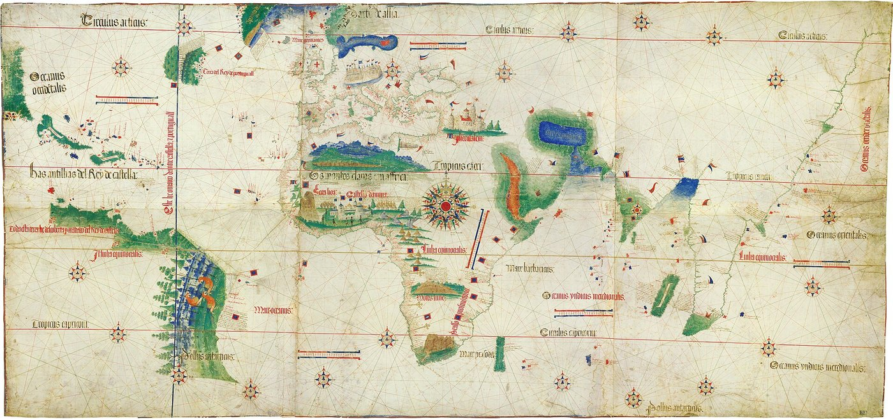
그림·지도 출처는 출처 모음에 있다.